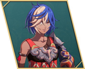

Loretta
- Chinese name
- 罗蕾塔
- Game8 tier
- A
- Used in
- Path 3: Theodora, Part III: Squad C · Cavalier
- Personal abilities
- Steadfast, Peak Form
- Boons
- Flying, Spear, Sword
- Banes
- Heavy Armor
- Likes
- Reliable people, sweets, her friends
Growth rates
| HP | Str | Mag | Spd | Dex | Def | Res | Lck | Cha |
|---|---|---|---|---|---|---|---|---|
| 35 | 35 | 35 | 55 | 40 | 30 | 40 | 30 | 30 |
Gifts they like
- Really liked
- Arrowhead Gem, Crimson Ghosh, Ginji Cervi, Honey Milk, Honey Pastries, Joint-Relief Gloves, Mellow Pastries, Pastry Cookbook, Pure-White Cervi, Simple Pastries, Training Pillar, Training Weights
Paired ending
Seteth — platonic or vague ending. Reach A support and watch the conversation. Keep it above Goliath, who also have an ending with Loretta.
Builds
Path 3: Theodora (Hard)
- Ornius Rider Beginner start
ranks: Riding E+; Axe D / Spear D - Wing Soldier Specialty Lv20
ranks: Flying D; Spear C / Sword C · female only - Bardinger Advanced Lv35
ranks: Riding C; Spear C / Sword B
- Joins
- S3/R5 + 3 Iron Swords
- Role
- Flier → cavalry sword
- Train
- Flying D, then Riding C, Sword B.
- Gear
- Thunder Sword (Game8 JP).
- Level in
- Ornius Rider: Str 35% · Def 30% · Res 45%
Wing Soldier: Str 35% · Def 35% · Res 45%
Bardinger: Str 45% · Def 35% · Res 50% - Master here
- Wing Soldier → Protecting Wings (Res +3); Bardinger → Aegis (20%: halve magic damage)
- Farm only
- Caladrius → Overtake (Mov +1 per kill until end of next turn (max +3)); Warrior → Practiced Art (Hit +10 when attacking with a combat art)
- Equip order
- Steadfast → Peak Form → Aegis → Overtake → Practiced Art → Spear or Sword Lv. 3 at B+ (Hit/Avo +5) → Canto from a bonded mount (Cai route)
- Why
- Game8's line. Part III: Celestial Trooper or Swordmaster.
Part III: Squad C · Cavalier (Hard)
- Bardinger Advanced from Theodora's path
ranks: Riding C; Spear C / Sword B - Swordmaster Master Lv45
ranks: Sword A · Mars's request
- Joins
- Squad C · Cavalier
- Train
- Swordmaster: Sword A
- Gear
- Thunder Sword.
- Level in
- Bardinger: Str 45% · Spd 55% · Dex 40%
Swordmaster: Str 45% · Spd 75% · Dex 55% - Carried in
- Wing Soldier → Protecting Wings; Caladrius → Overtake; Warrior → Practiced Art
- Master here
- Bardinger → Aegis (20%: halve magic damage); Swordmaster → Astra (Combat art: 5 hits at 50% damage)
- Farm only
- Myrmidon → Ravaging Arts (+6 damage on a critical); Shido → Ever Vigilant (Heal a little HP after a critical kill)
- Equip order
- Steadfast → Peak Form → Astra → Practiced Art → Ravaging Arts → Swordfaire at S+ (Hit/Avo +10, Atk +3)
- Why
- CN opinions on her are mixed; reserve slot.